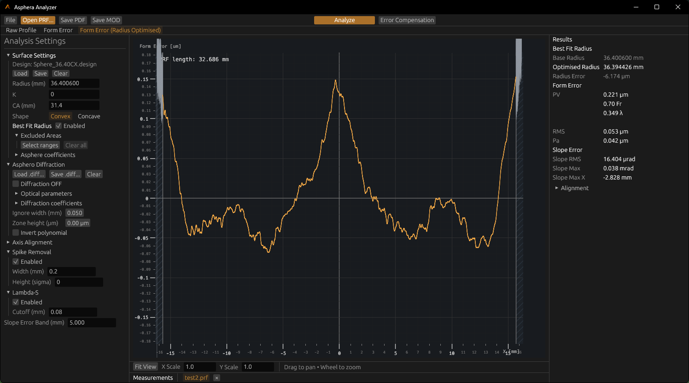
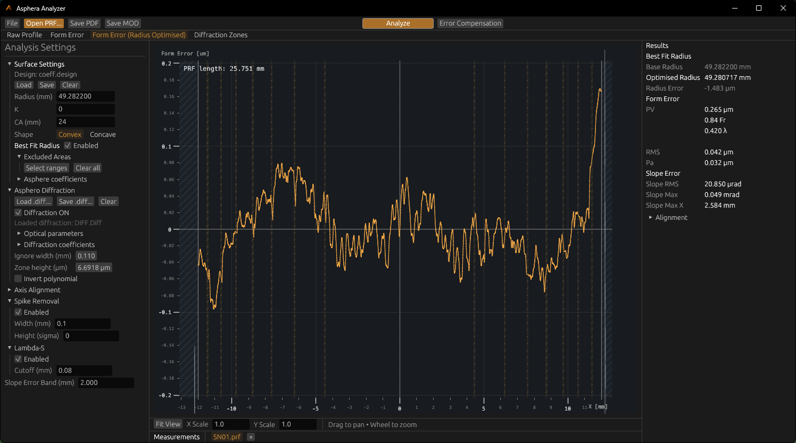
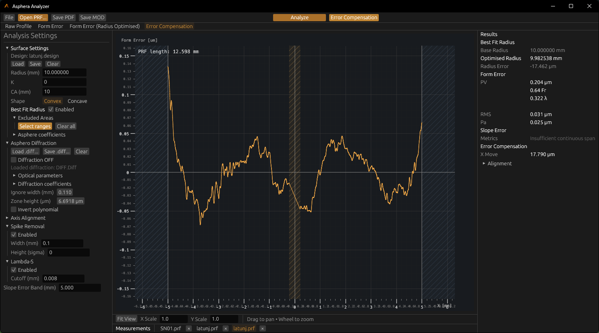

Every analysis starts from a measured .PRF profile
A / 01FORM · MEASUREMENT · ANALYSIS
ASPHERA — SURFACE ANALYSIS

Loaded profile · Form Error (Radius Optimised) · Best Fit Radius
Surface Form Analysis
Compare measured form with its model.
Load a .PRF profile with its surface design, then inspect the residual and PV/RMS metrics. Best Fit Radius evaluates the residual across a configured radius range.
ASPHERIC DESIGN
Set radius, conic constant, clear aperture, orientation, and supported asphere coefficients in the nominal surface model.
.PRF measurement/R · K · Aₙ nominal surface/PV · RMS form residual

Diffraction Analysis · detected zones and half-diameter comparison
02 / Zone analysis
Diffraction Analysis
Load a .diff configuration and analyse transitions against the measured profile. The zone view marks the detected bands and reports nominal-to-measured half-diameter differences.
CONFIGURATION.diff parameters and coefficients
READOUTDetected zones · Δ half-diameter

Error Compensation · residual, excluded ranges, and fit result
03 / Residual fitting
Error Compensation
Fit X offset and tilt, then review the compensation result against the measured residual. Excluded ranges remain visible in the plot and are omitted from applicable metrics.
FITTED TERMSX offset · tilt
EXCLUDED AREASSelected ranges · retained in profile context
Processing tools
Profile processing.
Filter, reconstruct, and fit the profile while keeping raw measurements and the ordinary Form Error available as distinct states.
01 / LOCAL EVENTS
Spike Removal
Detect narrow events by width and noise threshold. Reconstructed and unresolved events remain distinguishable in the processed profile.
02 / SPATIAL FILTER
Lambda‑S
Apply an optional Gaussian filter with a configurable cutoff length. Inspect the filtered state and its metrics separately.
03 / FORM FIT
Error Compensation
Fit X offset and tilt, then compare the starting and optimised residuals.
Best Fit RadiusSearch a configured radius range using RMS.
Excluded AreasExclude selected ranges from applicable metrics while keeping their profile context visible.
Profile statesRaw · aligned · residual · modified
Analysis outputs
Export analysis results.
CSVRaw · Aligned · Residual · Modified profiles
MODModified Profile output
PDFAnalysis report, including diffraction results when available